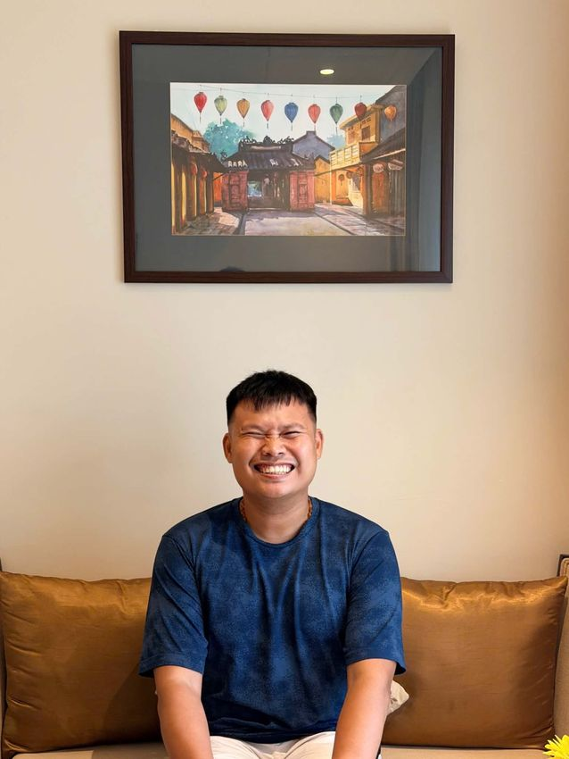

01
Advisory
Specialist judgement strengthens decisions where technical, regulatory or market depth matters — before resources are committed.
Brand Here leads the thinking, owns the client relationship and protects the quality of the whole engagement. When the work calls for deeper specialist judgement, we bring in proven experts — without asking clients to fund a fixed agency structure.
Every engagement starts with the business problem — not a predefined team or production package. Brand Here diagnoses the challenge, defines the strategic path and assembles only the expertise required to move it forward.
One accountable lead. The right specialists. No unnecessary layers.
This keeps senior judgement close to the work, gives clients clearer commercial visibility and allows the team to change as the engagement moves from decision to implementation to capability transfer.
Specialist judgement strengthens decisions where technical, regulatory or market depth matters — before resources are committed.
Experts turn the agreed strategy into systems, commercial execution, controls and operating practices that work in the real business.
Practitioner-led learning converts expertise into organizational capability — through executive programmes, workshops, assessments and credential pathways.
Each specialist brings operating experience from inside the systems, markets and governance environments they advise on.
La Pham is a technical lead with over a decade running production systems — AWS infrastructure, full-stack web platforms, and the APIs and CRM systems a business actually depends on day to day.
He spent five years as Technical Lead at JV-IT TECHS, and before that built platforms for clients across Vietnam and Singapore.
He joins engagements when a strategic recommendation must become secure, dependable technology that teams can operate and scale.
Khanh Cao brings 7+ years of e-commerce and growth experience across FMCG, F&B and ride-hailing — running full-funnel campaigns on Shopee, TikTok, Lazada, GrabFood and ShopeeFood.
She built and led Nexdor Việt Nam's Campaign & Merchandising team, managed end-to-end P&L for brands including NutiFood, and has worked across a portfolio of 30+ brands. Earlier roles include Unilever, Nova Consumer and Be Group.
She joins engagements when a market or e-commerce strategy must translate into platform execution, team performance and actual sales.
Vu Dinh Nguyen Anh is an ethics, compliance and risk leader with more than 18 years of experience across audit, healthcare, MedTech, retail and supply-chain environments.
His career spans KPMG, AstraZeneca, IKEA, Takeda, Sandoz, Boston Scientific and Teva Pharmaceuticals, where he currently leads local Ethics & Compliance across Singapore, Vietnam and Malaysia.
His experience covers enterprise and third-party risk, investigations, governance, business continuity, policy implementation and data privacy. He helps clients approach transformation and AI adoption with clearer accountability, stronger information safeguards and practical controls.
Vu holds a Bachelor of Commerce from RMIT University Vietnam and a bachelor's degree in Law from Tra Vinh University.

Nam Michel-Paul Tran is a senior finance leader, CFO advisor and lecturer with more than 17 years of experience across multinational, high-growth and entrepreneurial environments.
His work spans financial planning and analysis, cash-flow forecasting, management reporting, IFRS, audit, internal control, tax, treasury, ERP implementation and business performance. He helps SME leaders see where value is created, where cash is trapped and which financial decisions will support sustainable growth.
He joins engagements when a business needs to strengthen financial visibility, improve working capital, professionalize its finance function or prepare for investment and M&A. The goal is not reporting for its own sake, but transparent numbers, resilient cash flow and a business that can withstand deeper scrutiny.
Nam holds internationally recognized finance and accounting credentials including FCCA, CMA, ASA (CPA Australia), BFP ACA and a Certificate in International Financial Reporting. He also teaches ACCA and IFRS programmes, bringing practitioner judgement into the classroom and financial clarity back into the business.
The same practitioners who advise the work can help turn it into learning: executive briefings, functional workshops, applied programmes and assessment-based certificate pathways.
Programmes and credentials will be introduced progressively. Completion certificates and professional certification pathways will be clearly distinguished.
Diagnosis, strategy, facilitation, programme design, governance and accountable client leadership.
Named expert time when the engagement requires deeper technical, commercial or regulatory judgement.
External production, technology, media, research, platforms or vendors — scoped and shown separately.